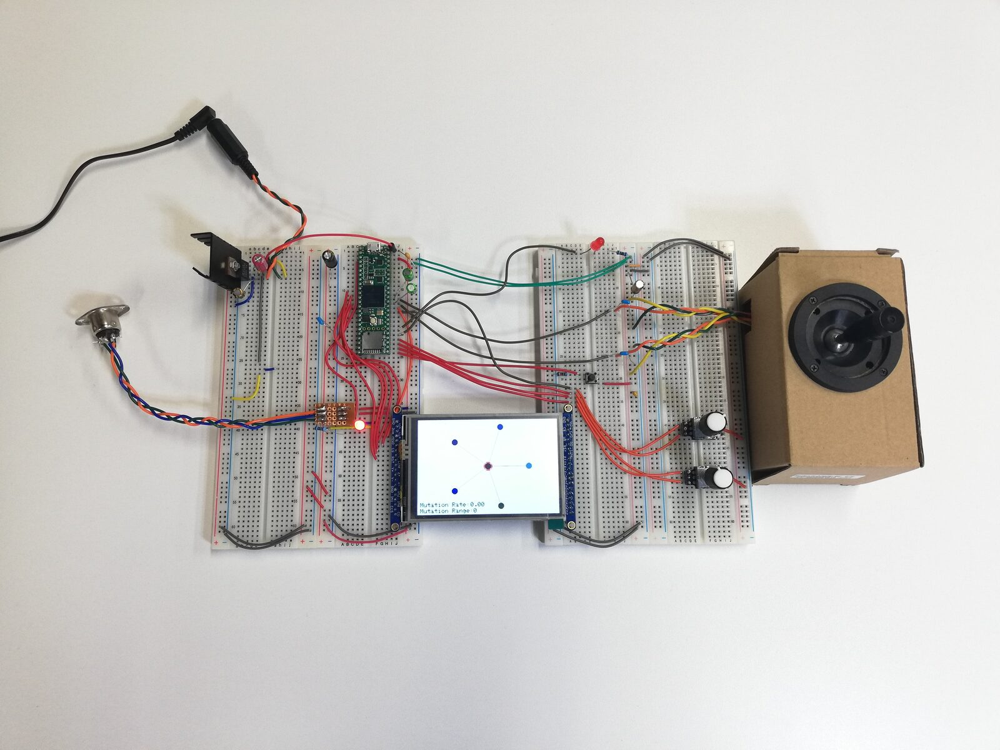
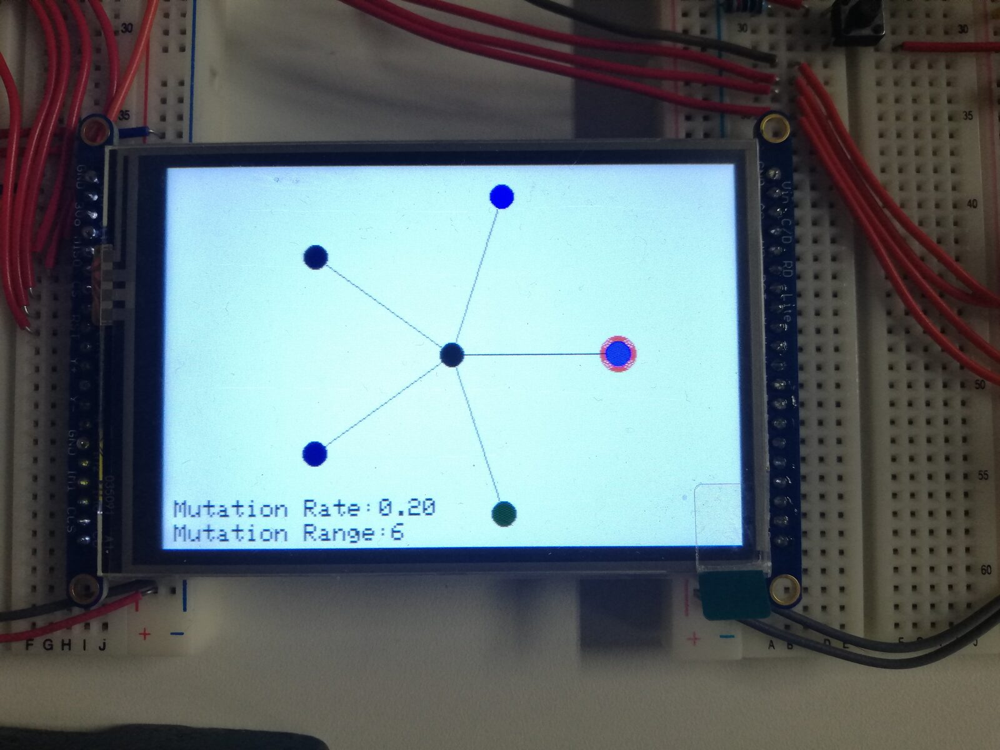
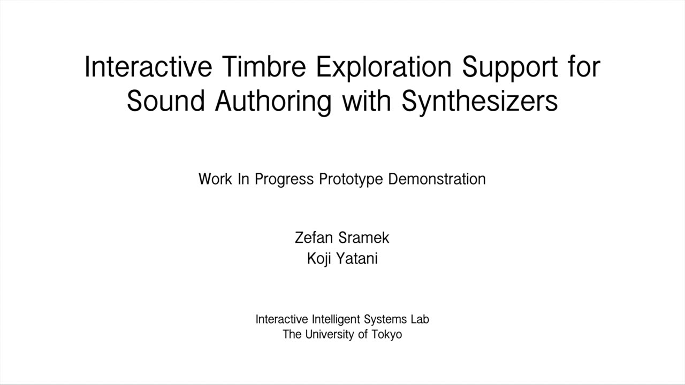
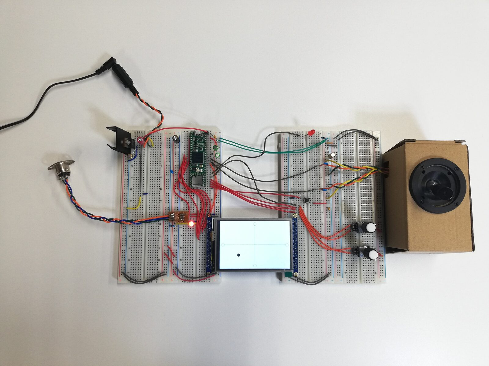
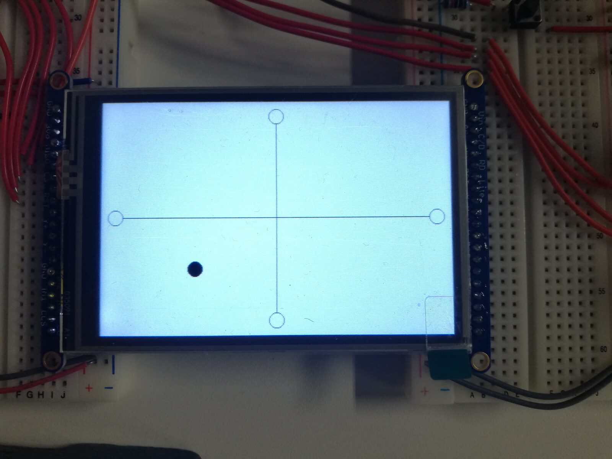

Interactive Timbre Exploration Support for Sound Authoring with Synthesizers
Interactive Timbre Exploration Support for Sound Authoring with Synthesizers
Zefan Sramek, The University of Tokyo, Koji Yatani, The University of Tokyo
1. PubPub Link
https://nime.pubpub.org/pub/hojzwnwg/
2. Conference Abstraction
Synthesizers with complex synthesis engines are capable of creating a vast array of timbres, but the large number of synthesis parameters makes timbre exploration and unique sound creation a daunting task. Furthermore, many synthesizer interfaces require tedious editing of single parameters while hundreds of parameters are available in total. As a result, musicians tend to rely on built-in preset sounds for their timbre exploration and music creation. This, however, limits the user’s freedom to explore the timbral space of the instrument, constraining their creativity and expression.
We present an interactive approach to support timbre explorations for synthesizers. Our interface includes two modes for such explorations: an evolutionary exploration mode that uses controlled randomness to generate a collection of timbres based on a single seed timbre chosen by the user, and a morphing exploration mode that allows the user to explore the timbral space between four chosen timbres. In this manner, the system supports the user to generate hundreds of unique potential timbres, substantially expanding their available sound palette, while utilizing a workflow similar to that with which they are already familiar.
3. Program Description
With our evolutionary process, the system can offer timbres that the user otherwise would not discover while considering their preferences. In this mode, the user starts from a single timbre and sets the values for the mutation rate and mutation range, which control the proportion of parameters to be mutated and the range in which they will vary respectively. The system then generates five offspring timbres, represented by the five circles reaching out from the center, which can be selected and auditioned with the joystick. The user then selects one if the five timbres to use as the new seed timbre, and the process is repeated. As this is an evolutionary process, it is intended to be iterative. Once one of the timbres is selected, the system generates a new set of five timbres, using the selected one as the new seed. In this way, the user can navigate through the timbral space through several iterations. By setting the mutation rate and mutation range appropriately, the user can explore subtle variations of the local timbral space, all the way to completely new timbral regions.
With our morphing mode, the system allows the user to locate a specific region of the timbral space at the intersection of four chosen timbres, represented by the four circles on the two axes, and explore this region freely with the joystick. This allows the user to create unique timbres in a way that prioritizes a quick feedback loop between the user's actions and the timbral changes, without the need to consider how the parameters themselves are changing. In this manner, the system supports the user to generate hundreds of unique potential timbres, substantially expanding their available sound palette, while utilizing a workflow similar to that with which they are already familiar.
The prototype is a fully self-contained hardware device that does not rely on connectivity with a personal computer. The system is built around the Teensy 4.1 microcontroller, which uses an ARM Cortex-M7 processor. The microcontroller handles all I/O operations, and drives the 3.5" LCD display, as well as communicating with the synthesizer via MIDI connection. The MIDI connection is made with a standard 5-pin DIN connector, and commands are sent via MIDI System Exclusive messages. Our test synthesizer is a Roland D-50, so currently the prototype communicates via the D-50's System Exclusive protocol. In future, we also hope to expand the system to make use of other System Exclusive protocols and MIDI Control Change messages.
In this work-in-progress demonstration, we present our current prototype and demonstrate use cases of our system.
4. Media
Overview and Demonstration
This video presents an overview of our prototype and demonstrates its usage.
Evolutionary Exploration


Evolutionary Mode


Evolutionary Mode (detail)
This video provides a demonstration of the current workflow of the evolutionary mode.

▶Morphing Exploration


Morphing Mode


Morphing Mode (detail)
This video provides a demonstration of the current workflow of the morphing mode.
 ▶
▶Sound Demonstration
This video provides examples of timbres programmed using our prototype.
5. Acknowledgements
The authors would like to thank Arissa J. Sato, Carla F. Griggio, and the other members of IIS Lab for their indispensable advice and support of this research.